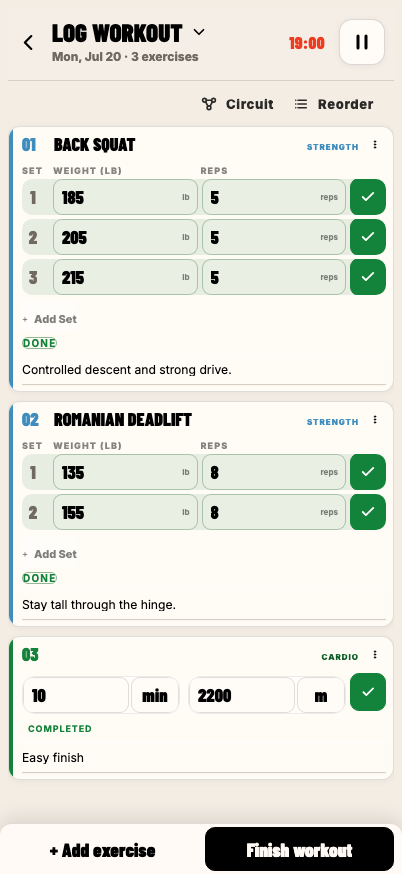
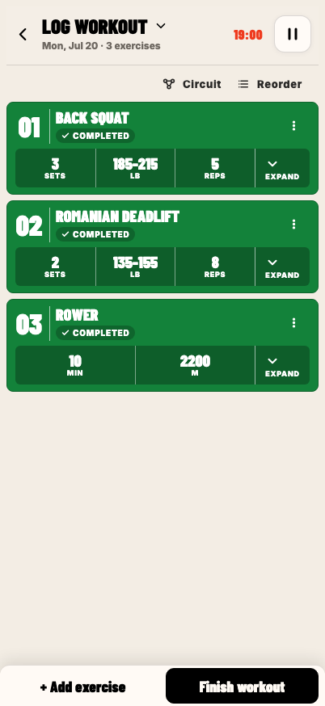
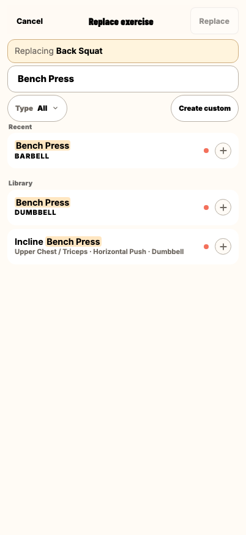
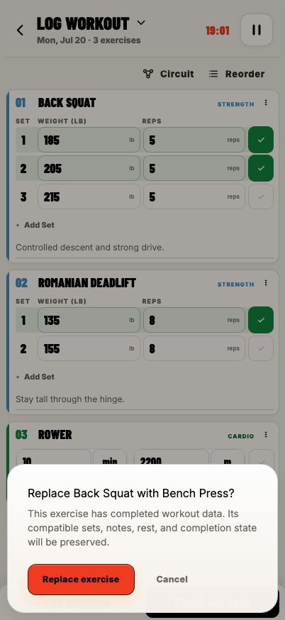
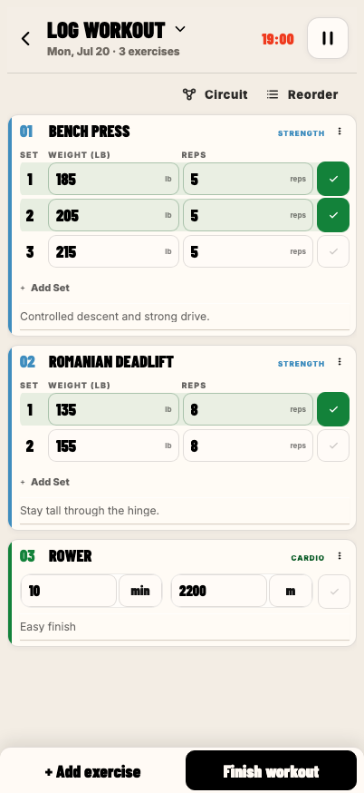
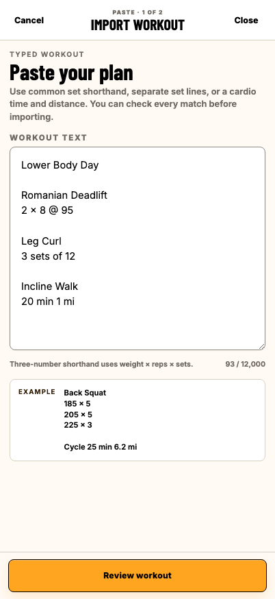
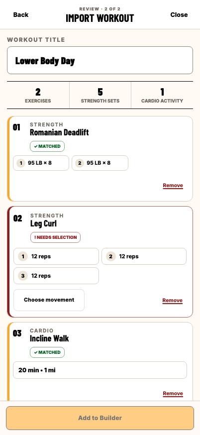
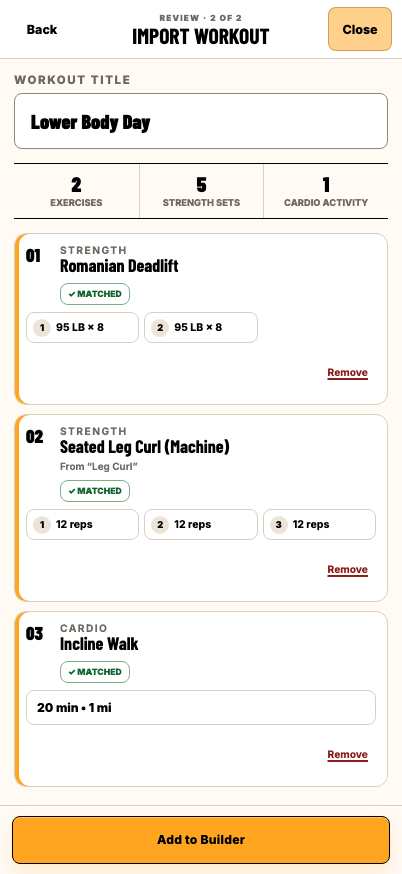
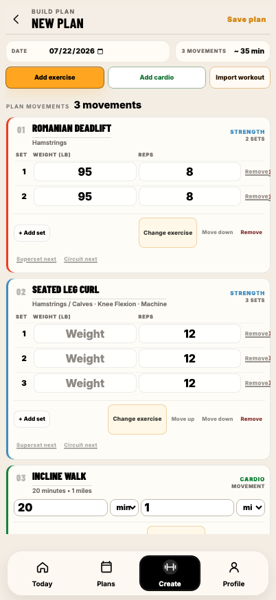

STRIDE: Designing for workouts that change.
I designed and directed STRIDE, a mobile-first workout planning and logging app built for the realities of active training.


From faster logging to a full workout lifecycle.
I built STRIDE because the workout tools I used felt slow, fragmented, and difficult to adjust during training. Logging speed was the original problem, but planning, building, tracking, and reusing workouts also felt disconnected.
STRIDE connects planning, active logging, and review so the workout remains continuous from setup through completion.
The workout could change without losing momentum.
Equipment becomes unavailable, exercises change, and the interface needs to keep pace.
I redesigned completed exercises as compact summaries so logged work stayed accessible without competing with the current movement. Exercise replacement preserves compatible values and confirms changes that could remove existing work.
The interface should become lighter as the workout progresses.


Exercise replacement
Replace an exercise without breaking the flow.
Choose a replacement, confirm the change, and continue in the active workout.
-
01 Active workout
-
02 Choose

-
03 Confirm

-
04 Continue

Automation that stays reviewable
STRIDE reduces the effort of repetitive setup while keeping important decisions in the user’s control.
Paste a workout, review uncertain matches, resolve them, and turn the result into an editable plan.
-
01 Paste

-
02 Review

-
03 Resolve

-
04 Edit

Product direction, accelerated by AI.
STRIDE is the result of product thinking, design decisions, and continuous iteration, supported by AI-assisted implementation.
I conceived and directed STRIDE—its priorities, workflows, interaction rules, and completion standards. I wrote implementation briefs and reviewed every change in the working product.
Codex accelerated implementation, testing, and iteration. Product direction, UX judgment, prioritization, and final acceptance remained mine.
AI handled the repetitive.
I handled the decisions that matter.
Vanessa
- Identify the opportunity and define the problem
- Set product priorities and success principles
- Design workflows and interaction rules
- Write implementation briefs and requirements
- Review in context, test, and accept changes
Product direction, UX decisions, and final acceptance stay with me.
Codex
- Implement features and components
- Write and run automated tests
- Refactor and optimize code
- Validate changes and prevent regressions
Implementation support and verification.
Review → Test → Refine
Each cycle improves the product. Nothing ships without review and testing.
Continuous iteration builds a better workout experience.
Reflection
Building STRIDE changed my understanding of what makes a product feel finished. I expected visual polish to be the hardest part, but the deeper challenge was making every interaction feel as considered as the interface looked.
I originally thought the Build page would be the center of the product. Through real use, I realized the active workout mattered more. Planning happens occasionally; logging happens every session. That shifted my focus toward speed, continuity, and removing anything that interrupted the workout.
My standard became simple: a feature was finished when I could use it without thinking about the interface. Working with Codex made it possible to turn ideas into working experiences quickly, but the real value came from testing those ideas, recognizing friction, and refining them until the product felt natural.
-
01
Look beyond the screen
A product can look polished and still feel difficult. The experience has to carry the same level of care as the visual design.
-
02
Design around real behavior
The most important workflow is not always the one you expect. Real use revealed where attention and refinement mattered most.
-
03
Refine until the interface disappears
The strongest interactions support the user's goal without calling attention to themselves.
STRIDE reinforced something I'll carry into every product I build: the most meaningful improvements rarely come from adding more. They come from understanding where people lose momentum, then designing experiences that help them keep moving.